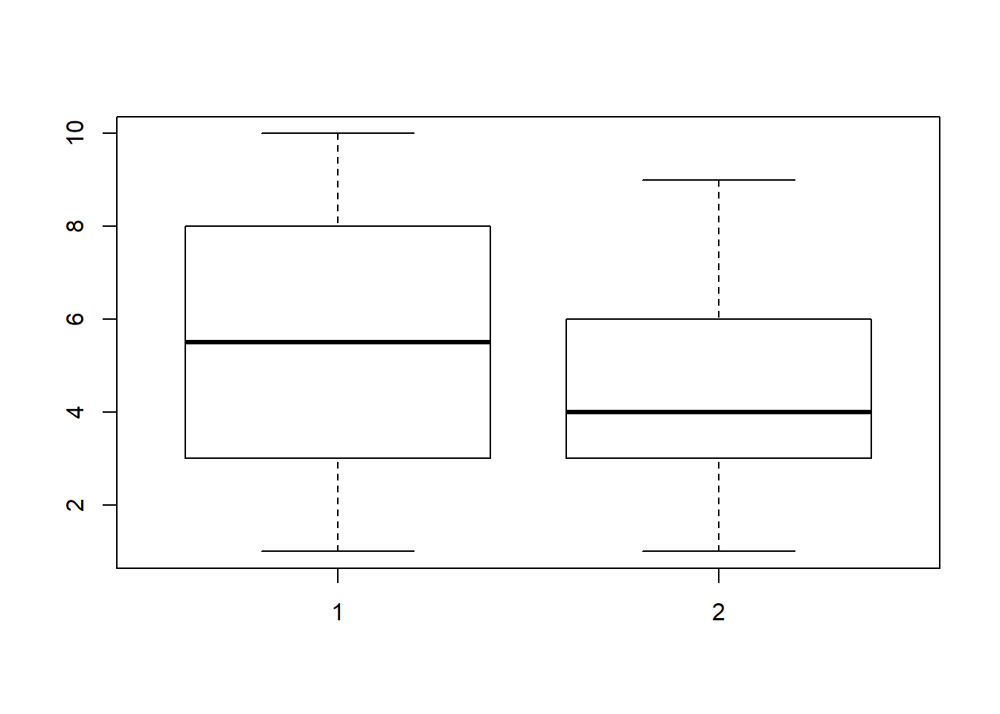
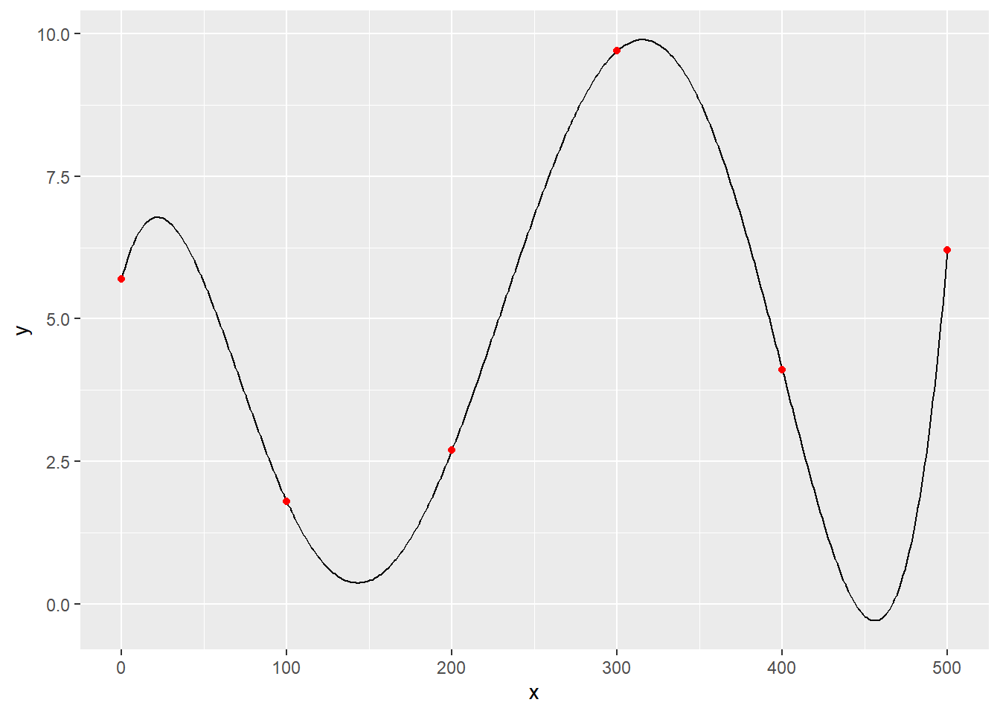

Rの標準的な機能について知る．
Rでは，ベクトルや行列をそのまま扱える． 数学的演算（たとえば，積，逆行列）は既に用意されている．
a <- c(1,2,3)a## [1] 1 2 3M <- matrix(
c(2,3,5,7,11,13,17,19,23),
nrow = 3)M## [,1] [,2] [,3]
## [1,] 2 7 17
## [2,] 3 11 19
## [3,] 5 13 23行列（ベクトル）の積や逆行列
M %*% a## [,1]
## [1,] 67
## [2,] 82
## [3,] 100solve(M)## [,1] [,2] [,3]
## [1,] -0.07692308 -0.7692308 0.69230769
## [2,] -0.33333333 0.5000000 -0.16666667
## [3,] 0.20512821 -0.1153846 -0.01282051数値（numeric/double），文字列（character）以外に，因子（factor），時刻(POSIXct)，等が用意されている．
x <- 1:5
str(x)## int [1:5] 1 2 3 4 5x <- c(1.2, 3.4)
str(x)## num [1:2] 1.2 3.4x <- c("a", "b")
str(x)## chr [1:2] "a" "b"x <- factor(c("a", "b"))
str(x)## Factor w/ 2 levels "a","b": 1 2x <- as.POSIXct(c("2020-01-01 12:34:56","2020-01-01 12:34:59"))
str(x)## POSIXct[1:2], format: "2020-01-01 12:34:56" "2020-01-01 12:34:59"他のプログラミング言語同様，自分で関数を定義できる． そのため，おおよそ考え付く全ての計算が可能．
funcA <- function(var1, var2){
return(var1 * 2 + var2 * 0.1)
}funcA(var1 = 10, var2 = 2)## [1] 20.2統計解析等では「データフレーム」を利用する．
データフレームは，列が変数，行がデータ，を表す．
d <- data.frame(x = 1:10, y = c(3,4,5,1,2,4,6,7,4,9))
str(d)## 'data.frame': 10 obs. of 2 variables:
## $ x: int 1 2 3 4 5 6 7 8 9 10
## $ y: num 3 4 5 1 2 4 6 7 4 9summary(d)## x y
## Min. : 1.00 Min. :1.00
## 1st Qu.: 3.25 1st Qu.:3.25
## Median : 5.50 Median :4.00
## Mean : 5.50 Mean :4.50
## 3rd Qu.: 7.75 3rd Qu.:5.75
## Max. :10.00 Max. :9.00しばしば，別途用意されたデータを読み込み，Rで処理する．
dat_hd <- read.table("heart.dat", header = T)
str(dat_hd)## 'data.frame': 270 obs. of 14 variables:
## $ age : num 70 67 57 64 74 65 56 59 60 63 ...
## $ sex : num 1 0 1 1 0 1 1 1 1 0 ...
## $ cp : num 4 3 2 4 2 4 3 4 4 4 ...
## $ sbp : num 130 115 124 128 120 120 130 110 140 150 ...
## $ chol : num 322 564 261 263 269 177 256 239 293 407 ...
## $ fbs : num 0 0 0 0 0 0 1 0 0 0 ...
## $ restecg : num 2 2 0 0 2 0 2 2 2 2 ...
## $ mthalach: num 109 160 141 105 121 140 142 142 170 154 ...
## $ exang : num 0 0 0 1 1 0 1 1 0 0 ...
## $ oldpeak : num 2.4 1.6 0.3 0.2 0.2 0.4 0.6 1.2 1.2 4 ...
## $ slope : num 2 2 1 2 1 1 2 2 2 2 ...
## $ ca : num 3 0 0 1 1 0 1 1 2 3 ...
## $ thal : num 3 7 7 7 3 7 6 7 7 7 ...
## $ hd : int 2 1 2 1 1 1 2 2 2 2 ...データ型，内容，など，修正可能． ただし，見通し良く計算するにはtidyverseを使ったほうがよい（後述）．
dat_hd$cp <- factor(dat_hd$cp, labels = c("typ_ang", "atyp_ang", "non_ang", "asymp"))
dat_hd$hd = factor(dat_hd$hd, labels = c("abs", "prs"))
str(dat_hd)## 'data.frame': 270 obs. of 14 variables:
## $ age : num 70 67 57 64 74 65 56 59 60 63 ...
## $ sex : num 1 0 1 1 0 1 1 1 1 0 ...
## $ cp : Factor w/ 4 levels "typ_ang","atyp_ang",..: 4 3 2 4 2 4 3 4 4 4 ...
## $ sbp : num 130 115 124 128 120 120 130 110 140 150 ...
## $ chol : num 322 564 261 263 269 177 256 239 293 407 ...
## $ fbs : num 0 0 0 0 0 0 1 0 0 0 ...
## $ restecg : num 2 2 0 0 2 0 2 2 2 2 ...
## $ mthalach: num 109 160 141 105 121 140 142 142 170 154 ...
## $ exang : num 0 0 0 1 1 0 1 1 0 0 ...
## $ oldpeak : num 2.4 1.6 0.3 0.2 0.2 0.4 0.6 1.2 1.2 4 ...
## $ slope : num 2 2 1 2 1 1 2 2 2 2 ...
## $ ca : num 3 0 0 1 1 0 1 1 2 3 ...
## $ thal : num 3 7 7 7 3 7 6 7 7 7 ...
## $ hd : Factor w/ 2 levels "abs","prs": 2 1 2 1 1 1 2 2 2 2 ...ちょっとしたクロス集計（度数分布）は，1行でできる． たとえば，cpの度数分布．
xtabs(~cp, dat_hd)## cp
## typ_ang atyp_ang non_ang asymp
## 20 42 79 129xtabs(~cp+hd, dat_hd)## hd
## cp abs prs
## typ_ang 15 5
## atyp_ang 35 7
## non_ang 62 17
## asymp 38 91さまざまなプロット機能が使える． ただし，今はより多機能のggplotを使うのが一般的（後述）．
boxplot(d$x, d$y)
あらゆる詳細な統計学的検定が利用可能． 計算結果の正しさは検証済み．
wilcox.test(x = runif(10), y = runif(10)+0.3, alternative = "two.sided", mu = 0, paired = F, exact = T)##
## Wilcoxon rank sum test
##
## data: runif(10) and runif(10) + 0.3
## W = 18, p-value = 0.01469
## alternative hypothesis: true location shift is not equal to 0統計モデルも1行で構築できる．
model_hd <- lm(oldpeak ~ cp + mthalach + cp, data = dat_hd)
summary(model_hd)##
## Call:
## lm(formula = oldpeak ~ cp + mthalach + cp, data = dat_hd)
##
## Residuals:
## Min 1Q Median 3Q Max
## -1.9301 -0.7154 -0.2450 0.5360 4.9269
##
## Coefficients:
## Estimate Std. Error t value Pr(>|t|)
## (Intercept) 3.733016 0.518280 7.203 6.12e-12 ***
## cpatyp_ang -1.064871 0.284188 -3.747 0.00022 ***
## cpnon_ang -0.623573 0.261576 -2.384 0.01783 *
## cpasymp -0.368516 0.255320 -1.443 0.15010
## mthalach -0.014423 0.002949 -4.892 1.74e-06 ***
## ---
## Signif. codes: 0 '***' 0.001 '**' 0.01 '*' 0.05 '.' 0.1 ' ' 1
##
## Residual standard error: 1.045 on 265 degrees of freedom
## Multiple R-squared: 0.18, Adjusted R-squared: 0.1676
## F-statistic: 14.54 on 4 and 265 DF, p-value: 9.45e-11解析の練習用に色々なデータセットが用意されている． たとえば，サプリメントによる歯の成長データToothGrowth．
data("ToothGrowth")
str(ToothGrowth)## 'data.frame': 60 obs. of 3 variables:
## $ len : num 4.2 11.5 7.3 5.8 6.4 10 11.2 11.2 5.2 7 ...
## $ supp: Factor w/ 2 levels "OJ","VC": 2 2 2 2 2 2 2 2 2 2 ...
## $ dose: num 0.5 0.5 0.5 0.5 0.5 0.5 0.5 0.5 0.5 0.5 ...summary(ToothGrowth)## len supp dose
## Min. : 4.20 OJ:30 Min. :0.500
## 1st Qu.:13.07 VC:30 1st Qu.:0.500
## Median :19.25 Median :1.000
## Mean :18.81 Mean :1.167
## 3rd Qu.:25.27 3rd Qu.:2.000
## Max. :33.90 Max. :2.000library(pracma)
library(tidyverse)## -- Attaching packages --------------------------------------------------- tidyverse 1.3.0 --## √ ggplot2 3.2.1 √ purrr 0.3.3
## √ tibble 2.1.3 √ dplyr 0.8.4
## √ tidyr 1.0.2 √ stringr 1.4.0
## √ readr 1.3.1 √ forcats 0.4.0## -- Conflicts ------------------------------------------------------ tidyverse_conflicts() --
## x purrr::cross() masks pracma::cross()
## x dplyr::filter() masks stats::filter()
## x dplyr::lag() masks stats::lag()たとえば，ラグランジュ補間を1つの命令(barylag)で計算可能
x_d <- c(0,100,200,300,400,500)
y_d <- c(5.7,1.8,2.7,9.7,4.1,6.2)
x <- 0:500
y <- pracma::barylag(x_d,y_d,x)ggplot() +
geom_line(data = data.frame(x,y), aes(x,y)) +
geom_point(data = data.frame(x_d, y_d), aes(x_d, y_d), colour = "red")